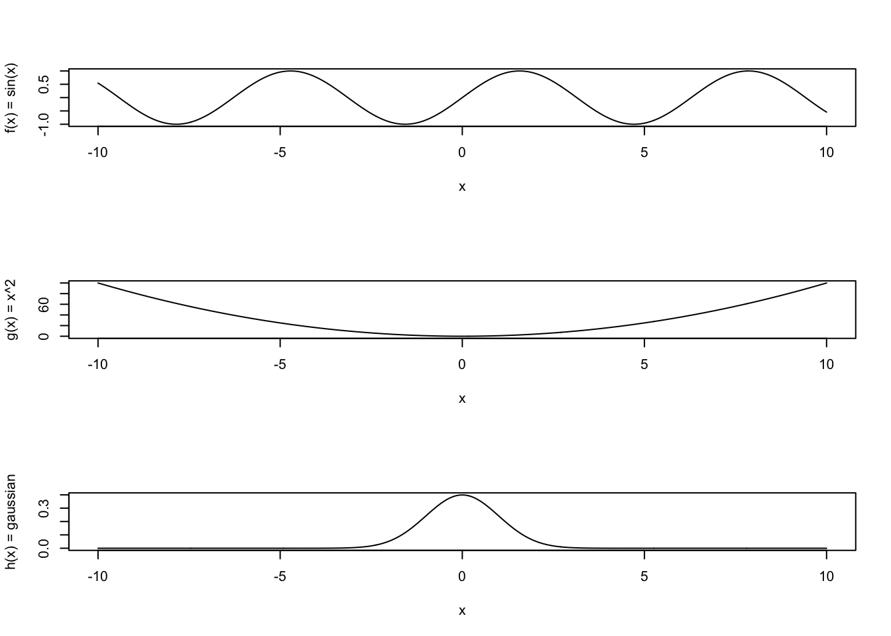

drawDartboard <- function(){
# Square with Inscribed Circle in R
# Set up the plot
plot(c(-1.2, 1.2), c(-1.2, 1.2),
type = "n",
asp = 1,
xlab = "",
ylab = "",
main = "Square with Inscribed Circle")
# Define square side length
side_length <- 1
half_side <- side_length / 2
# Draw the square
# Square vertices: bottom-left, bottom-right, top-right, top-left, back to bottom-left
square_x <- c(-half_side, half_side, half_side, -half_side, -half_side)
square_y <- c(-half_side, -half_side, half_side, half_side, -half_side)
lines(square_x, square_y, col = "blue", lwd = 2)
# Draw the inscribed circle
# For a square with side length s, the inscribed circle has radius r = s/2
radius <- side_length / 2
theta <- seq(0, 2*pi, length.out = 100)
circle_x <- radius * cos(theta)
circle_y <- radius * sin(theta)
lines(circle_x, circle_y, col = "red", lwd = 2)
# Add a grid for reference
grid(col = "lightgray", lty = "dotted")
# Add legend
legend("topright",
legend = c("Square", "Inscribed Circle"),
col = c("blue", "red"),
lwd = 2)
# Optional: Add center point
points(0, 0, pch = 19, col = "black", cex = 0.8)
} MCMC Primer
By the end of this set of exercises and examples, we will code up a Metropolis-Hastings algorithm to carry out our own MCMC.
We will start by introducing some basic Monte Carlo techniques.
- Monte Carlo sampling to approximate \(\pi\)
- Monte Carlo Integration
- Importance sampling
- Metropolis-Hastings and MCMC
Example 1: Monte Carlo sampling to approximate \(\pi\)
From calculus, we know how to evaluate integrals using antiderivatives. You might also be familiar with numerical quadrature techniques like the trapezoid rule and Simpson’s rule that approximate areas under curves with shapes that have nice are formulas.
Monte Carlo integration works a little bit differently. Let’s start by approximating the area of a circle to approximate \(\pi\).
Suppose there is a square dart board with a circle inscribed. My dart throws are random, so when I launch a dart at the board it lands randomly someplace in the square. Sometimes darts will land inside the circle, sometimes they will land outside.
If I’ve chosen my square so that it is 1 meter x 1 meter, then the inscribed circle will have a diamter of 1 meter. Like this:
Now, I’m going to throw darts at this target. Because they land randomly, the (x,y) coordinates of the darts are each uniformly distributed, like this:
throwDarts <- function(ndarts){
# randomly choose (x,y) coordinates independently:
x <- runif(ndarts,min=-0.5, max=0.5)
y <- runif(ndarts,min=-0.5, max=0.5)
# re-draw the dartboard:
drawDartboard()
# add the hit locations to the dartboard:
points(x,y, pch=4)
return(list(x=x,y=y))
} Play around with the throwDarts function for different values of ndarts. How does this help us evaluate \(\pi\)? Remember that Area(circle) = \(\pi\) * radius^2, and Area(square) = radius^2 = 1, because we deliberately chose radius=1.
So, the area of the circle is just \(\pi\)/4, and the area of the rectangle is 1.
Another way of saying this is that \(\pi\) = Area(circle)/Area(rectangle).
So what? Well, the darts give us a way to calculate the ratio of areas. Convince yourself that (number of darts inside circle)/(total darts thrown) is equal to this ratio of areas.
Another way of saying this is: the probability a dart lands inside the circle is just the ratio of Area(circle)/Area(square).
Let’s modify throwDarts to calculate the fraction of darts falling inside the circle:
countDartsInside <- function(ndarts){
darts <- throwDarts(ndarts)
x = darts$x
y = darts$y
r = sqrt(x^2 + y^2)
numinside = sum(r < 0.5)
return(numinside/ndarts)
} The area of the circle is \(\pi\)/4, the area of the square is 1
So, 4 x (fraction of darts landing inside) = \(\pi\) (approximately)
calculatePi <- function(ndarts){
ratio = countDartsInside(ndarts)
pi_approx = 4 * ratio
return(pi_approx)
}Optional coding exercise:
Can you modify the code above to color in the darts according to whether they fall inside or outside the circle?
Question:
How many darts do you need to throw to approximate \(\pi\) to three significant figures?
It seems like this approximation is doing.. ok. Against quadrature methods, this will not be nearly as computationally efficient. However, it is easy and straightforward to use, and generalizes well to more complicated tasks when quadrature methods are not tractable.
Example 2: Using Monte Carlo to calculate definite integrals
The same exact trick works for calculating definite integrals, i.e. areas under curves. Let’s calculate integrals of the following functions with limits of integration of a = -5 and b = 5.
#limits of integration:
a <- -5
b <- 5
# functions to integrate:
f <- function(x)sin(x)
g <- function(x) x^2
h <- function(x) 1/sqrt(2*pi) * exp(-x^2/2)
# antiderivatives of these functions (should have +C):
bigf <-function(x) -cos(x)
G <- function(x) x^3/3
H <- function(x) pnorm(x,mean=0,sd=1)So, using the Fundamental Theorem of calculus, part 2, we know our definite integrals should evaluate to:
# bigf(5) - bigf)-5) = 0 (also b/c sin(x) is odd)
# G(5) - G(-5) = 250/3 = 83.333..
# H(5) - H(-5) = 0.9999994
# Let's plot these:
xvals <- seq(-10,10,length=1000)
par(mfrow=c(3,1))
plot(xvals, sapply(xvals, f), type='l',xlab='x',ylab='f(x) = sin(x)')
plot(xvals, sapply(xvals, g), type='l',xlab='x',ylab='g(x) = x^2')
plot(xvals, sapply(xvals, h), type='l',xlab='x',ylab='h(x) = gaussian')
We could inscribe these shapes within rectangles (like with the dartboard example), but the annoying difficulty with that is that our functions have different heights. So, we would need to customize our dartboard in each case. We don’t want to do that. Instead, we want to modify our method to accomodate any function whatsoever, particularly as we might not always be able to “draw” the function conveniently (if it is a function of 1000’s of variables, for example).
Instead, we can go back to calculus. At some point in calculus, you were taught “The Mean Value Theorem for Integrals”. You may not remember it, but I guarantee that it was taught to you if you took calculus.
It says this:
\[\begin{align*} \bar{f} = \frac{1}{b-a} \int_a^b f(x) dx. \end{align*}\]
What this means is: each of these curves might go up or down along the interval from a to b, but it has an “average” height \(\bar{f}\).
This average is calculating by evaluating the area under the curve, and then dividing that by the width of your integration interval.
If \(f(x)\) is a constant function, then \(\int_a^b f dx = (b-a) f\), and \(\bar{f} = f\). Or: if you have a rectangle (the area) and divide that area by the width, you get the height.
What does this have to do with Monte Carlo integration? Here’s how: we are going to re-write the Mean Value Theorem for Integrals:
\[\begin{align*} \bar{f} &= \frac{1}{b-a} \int_a^b f(x) dx, \\ & \iff \\ \int_a^b f(x) dx &= (b-a) \bar{f}. \end{align*}\]
If we could evaluate \(\bar{f}\) somehow, then multiplying by \((b-a)\) would give us our integral. We can’t evaluate \(\bar{f}\) exactly, but we can certainly approximate it.
All we have to do is this: randomly choose x-coordinates between \(a\) and \(b\), evaluate \(f(x)\) at each of those points, and then average those values. This will give us a Monte Carlo approximation to the average value of \(f(x)\):
ndarts <- 50000
xrands <- runif(ndarts, min=a, max=b)
fbar_approx <- mean( f(xrands) )
gbar_approx <- mean( g(xrands) )
hbar_approx <- mean( h(xrands) )Once we have our approximations to the average values of the functions (i.e. approximations to the heights), we just multiply those by the widths on the x-axis (b-a) to get our approximation to the integral (i.e. the area under the curve):
integral_f <- fbar_approx * (b-a)
integral_g <- gbar_approx * (b-a)
integral_h <- hbar_approx * (b-a)Experiment with different values of ndarts to see how the approximations change.
Exercise:
Modify the code above to evaluate integrals of the multivariate function \(f(x,y) = \sin(x) \cos(y)\)
Example 3: Importance sampling
The mathematician in you might be annoyed at the crudeness of these approximations. After all, standard numerical quadrature approaches that we learn about in calculus are far more accurate. However, I hope you can appreciate the simplicity of this approach. Quadrature methods often need to be tailored for particular situations to work optimally. The code above can be used with very minor modification to evaluate any integral whatsoever.
This does have one rather extreme drawback, however. Let’s return to the Gaussian example in the previous section. Suppose instead I had asked you to calculate the definite integral with \(a=5\), \(b=\infty\).
Let’s plot this just to see what the trouble might be:
plot(xvals, sapply(xvals, h), xlab='x', ylab='Gaussian',
type='l')
points(x=5, y=0,col='red')There are some challenges here. I probably can’t use runif anymore because it requires a maximum value that is finite.
Now, you might be saying to yourself, “Well, R has the ability to simulate variables from a standard normal distribuion, and our h(x) is just the PDF of a standard normal distribution. So, I could just simulate a large number of standard normal variates, and evaluate the fraction that are larger than 5.
“Okay,” I reply. “Let’s do that.”
tailsample <- rnorm(1e4)While we’re at it, let’ just go ahead and use pnorm to figure out what the true answer really is:
tailprob = 1-pnorm(5)
print(tailprob)[1] 2.866516e-07What proportion of tailsample was greater than 5?
sum(tailsample > 5)/length(tailsample)[1] 0I got zero. Let’s just use a larger sample:
tailsample <- rnorm(1e6)
sum(tailsample > 5)/length(tailsample)[1] 0I’m seeing that I usually get 0 or 1 value larger than 5, so that our Monte Carlo approximation to the tail probability is either 0 or 1e-6.
The problem is that we are simulating rare events. We need a workaround.
This is what Importance Sampling is designed to accommodate. The key is to multiply by 1:
\[\begin{align*} Pr(Z>5) &= \int_5^\infty h(x) dx ,\\ &= \int_5^\infty (h(x)/w(x)) w(x) dx,\\ &= \int \frac{h}{w} dw. \end{align*}\]
The interpretation of these two integrals is different:
In the first line, \(\int f(x) dx\) means to sample x uniformly, and then average the \(f(x_i)\)
In the second line, \(\int f(x)/w(x) dw\) means to sample x from a PDF \(w(x)\), instead of uniformly, and then average the ratios \(f(x)/w(x)\) to obtain the integral
(If you’re familiar with Measure theory, this is using the Radon Nikodym derivative.)
The only restriction is here is that \(w(x)\) needs to be supported on the original domain of integration for \(x\), in this case, \([5, \infty)\).
Here’s an example:
h <- function(x) dnorm(x)
w <- function(x) dexp(x-5, rate=1/10)
getimportanceest <- function(ndarts){
importance_sample <- 5 + rexp(ndarts, rate=1/10)
ratios <- sapply(importance_sample[importance_sample>5],
function(x){h(x)/w(x)} )
return(mean(ratios))
}Exercise:
What happens if you change the shift in \(w(x)\) to be something different from 5?
Example 4: Metropolis-Hastings and MCMC
All of the previous methods assume that we can sample from a particular distribution. Mostly we sampled from the uniform distribution, but the importance sampling example also relied on us being able to sample from the exponential distribution.
What if we can’t sample from a distribution directly using a built-in R function? This is basically the problem that Markov Chain Monte Carlo, and the Metropolis- Hastings algorithm, are designed to solve.
If you’ve worked through the substitution model exercises in a different code, you should be somewhat familiar with Markov chains – specifically, the fact that they approach a stationary distribution after lots of simulation time.
MCMC simulates a Markov chain whose stationary distribution happens to coincide with the particular distribution \(f(x)\) we are interested to sample from. We may not be able to sample from \(f(x)\) directly, but if we can simulate a Markov chain that has \(f(x)\) as its stationary distribution, then we can obtain samples with the same statistical properties.
The key is how to construct such a Markov chain in the first place. This is what the Metropolis Hastings algorithm does.
Example: Metropolis Hastings algorithm for a Normal distribution
Obviously we could just sample using rnorm, but this is to show that the algorithm we are about to use works.
Target distribution (we want to obtain samples from this distribution, and are pretending that we are unable to do so directly at the moment): We DO need to be able to evaluate \(f(x)\) for this to work:
f <- function(x) dnorm(x,mean=0)The Metropolis-Hastings algorithm works as follows:
At iteration k:
propose an update, y, which may become x_{k+1}
Evaluate f(y), and compare to f(x_k)
if f(y) > f(x_k), accept y as x_{k+1} = y;
otherwise, accept y as x_{k+1} = y with probability less than one;
Repeat ad infinitumWe have most of the ingredients we need; what remains is how to propose and accept updates. The MH algorithm is very flexible, in the sense that we can update parameters however we like: we can sample \(y \sim w(x)\), where \(w(x)\) is any distribution whatsoever (or almost so). The catch is: some choices of \(w(x)\) result in a Markov chain that converges to the stationary distribution more rapidly than others.
For this first example, we will set \(w(x)\) to a uniform distribution centered at the current state, \(x_k\), and adds a small increment in the interval \([x_k-\delta, x_k+\delta]\):
w <- function(x, delta) runif(1, min=x-delta, max=x+delta)Let’s write the algorithm:
# initialize state (and allocate into a vector):
ninits <- 100000 # how long to run
xk <- rep(0, length=ninits) To illustrate the method, let’s make the initial value different from zero (in practice, it’s good for the initial value to not be in the tails of \(f(x)\)):
But I will chose a “bad” guess in the tails to illustrate the algorithm’s behavior:
xk[1] <- 20
for(i in 1:ninits){
y <- w(xk[i],1)
# Calculate the "acceptance ratio":
alpha <- f(y)/f(xk[i])
# alpha > 1 means we always accept y; alpha < 1 means we only sometimes do:
u <- runif(1)
if(alpha > u){xk[i+1] <- y}else{xk[i+1]=xk[i]}
}
par(mfrow=c(2,1))
plot(xk, type='l', xlab='Iteration of MH algorithm', ylab=bquote(x[k]))
hist(xk, xlab=bquote(x[k]), freq=F, ylim=c(0,0.5), breaks=100, xlim=c(-20,20))
lines(seq(-20,20,length=1000), sapply(seq(-20,20,length=1000), f), col='red')
legend('topright',legend=c('f(x) (true)'),col='red',lty=1)From looking at the “traceplot” (time series, top row), you will notice that there is a clear transient period toward the start of the simulation. MCMC practitioners usually discard the early portion of their MCMC runs as a “burn-in” period. The histogram in the second row obviously has a tail that is much larger than it should be, by virtue of the bad initial guess.
However, it is a nice feature of MCMC that in teh long run it will wander to the current distribution.
The steps of the Metropolis-Hastings algorithm are very similar to importance sampling. We have near-total freedom to choose the proposal distribution, in much the same way that we have near-total freedom to choose the sampling distribution in importance sampling.
In Metropolis-Hastings, it is typical but not required to center the proposal distribution on the current value, \(x_k\), which can change each iteration. Above, we did this by proposing values uniformly form \([x_k - \delta, x_k + \delta]\).
Exercises:
0.
Modify the example above to use different values of \(\delta\) in the Uniform proposal distribution. What happens if you make \(\delta\) very small or very large? In either case, you should observe “poor mixing” of the Markov chain, but for different reasons.
1.
Modify the MH algorithm above to approximate samples from a Poisson distributionwith mean 10. Is there a convenient alternative to runif for your proposals, y?
2.
Use the acf function to determine the autocorellation in your MCMC runs. Compare this to what you should see from an equal number of samples drawn using rnorm or rpois. In light of this, are your MCMC samples “independent and identically distributed (iid)”?
3.
Modify the MH algorithm for \(f(x) = p*f_1(x) + (1-p)*f_2(x)\), where \(f_1\) and \(f_2\) are both normal distributions but with means of \(\mu_1=-10\) and \(\mu_2=10\), respectively (you can assume they both have unit variance). This is called a “mixture” distribution. See how the MH algorithm performs for \(p=1/2\), and modify your proposal distribution to see if you can ever approximate the full distribution (rather than just one of the mixture components).